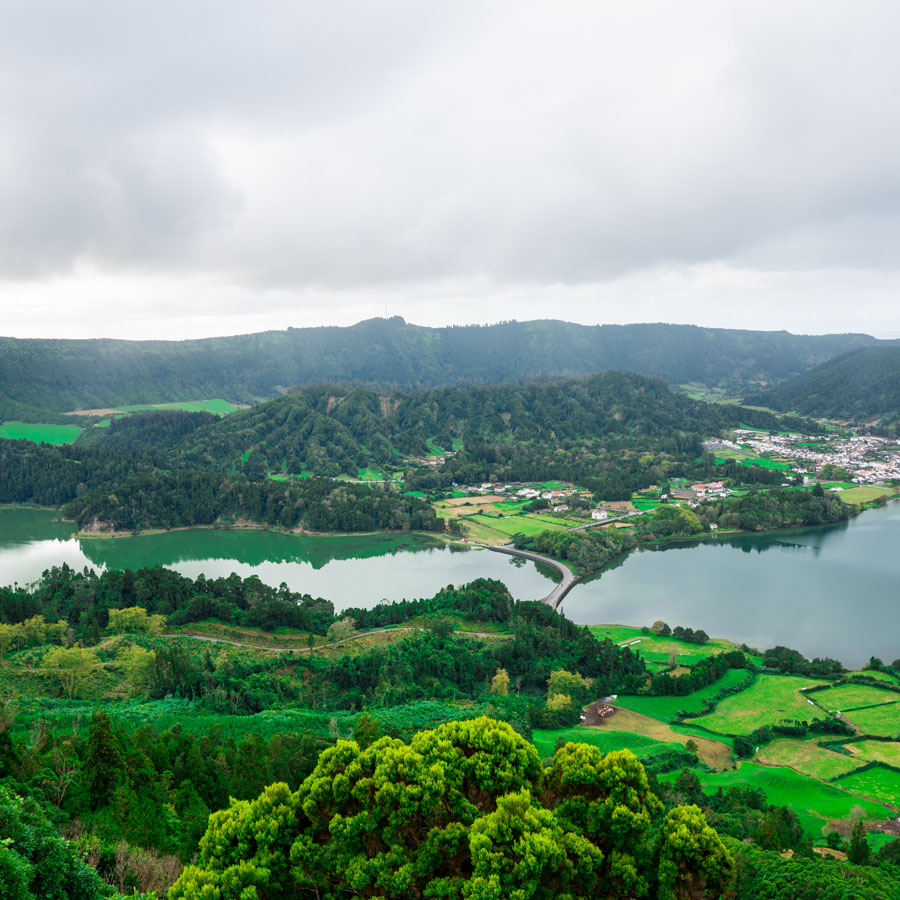
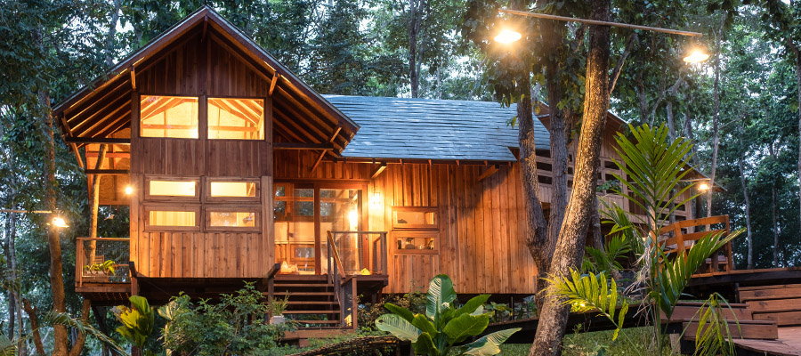

Conheça nossos chalés e nosso quarto comunitário, faça sua reserva e aproveite sua estadia!

Em um ambiente tranquilo e familiar, nossa equipe entrega um atendimento cordial e descontraído que fará com que os hóspedes experimentem a magia inebriante do lugar.
A Pousada Paradiso oferece acomodações para diferentes necessidade, confortáveis e decoradas com muito bom gosto, ficaremos felizes em compartir este cantinho do paraíso que dificilmente esquecerá.
Para você que deseja ter uma experiência exclusiva, oferecemos dois tipos de chalés. Os chalés da categoria Plus ficam organizados em grupos de três, comportando um grupo de até seis pessoas (duas por chalé). Já os chalés da categoria Master ficam isolados em contato total com a natureza, comportando até quatro pessoas.

Nossos chalés plus trazem um lugar para toda a família se reunir, assim sendo um lugar bem convidativo para uma prosa, e tanto risadas sínceras entre família!

Nossos chalés master trazem um convívio de perto com a natureza, com uma contrusção voltada para o aconchego, e uma boa tarde em família!
Para quem gosta de conhecer novas pessoas e ter experiências compartilhadas.
Oferecemos a opção de estadia em quartos compartilhados. Todos os quartos possuem seis beliches, e tem acesso a cozinha e banheiro comunitário